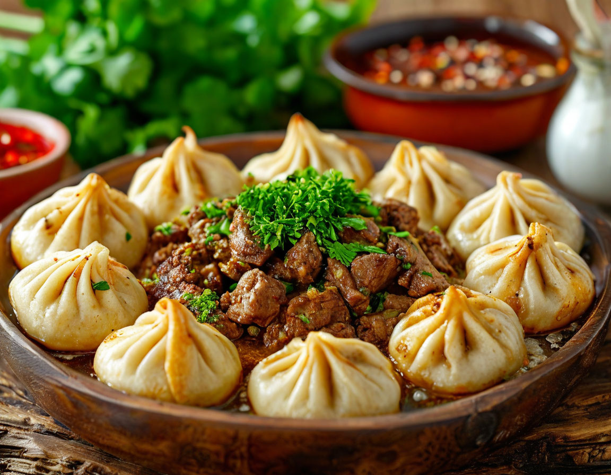
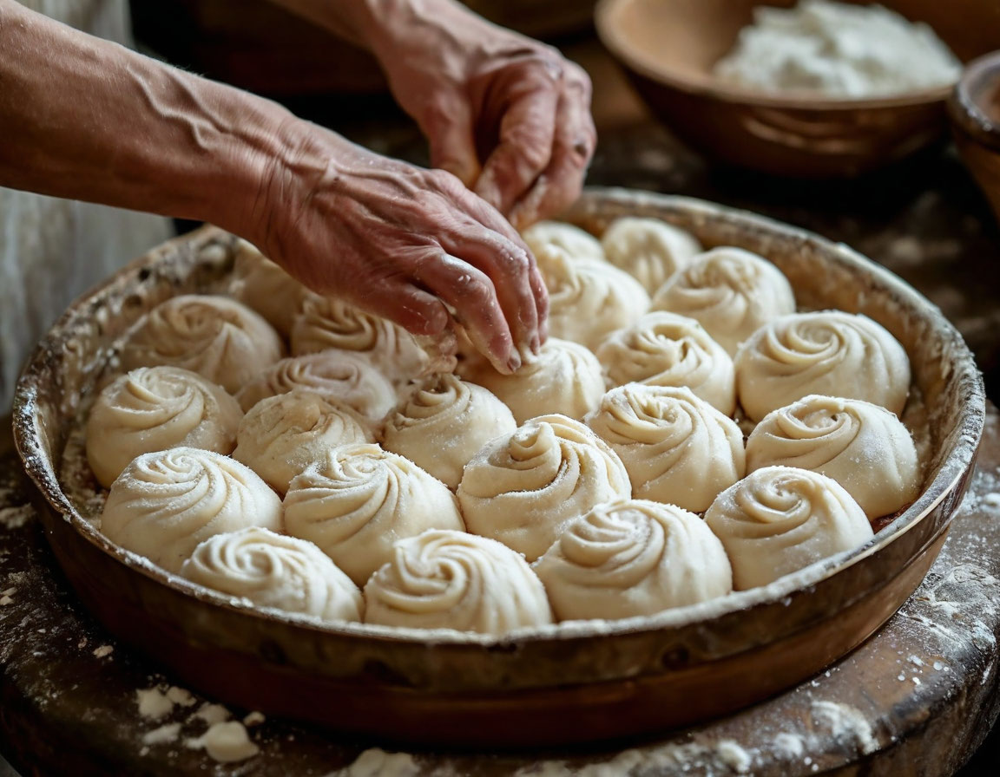
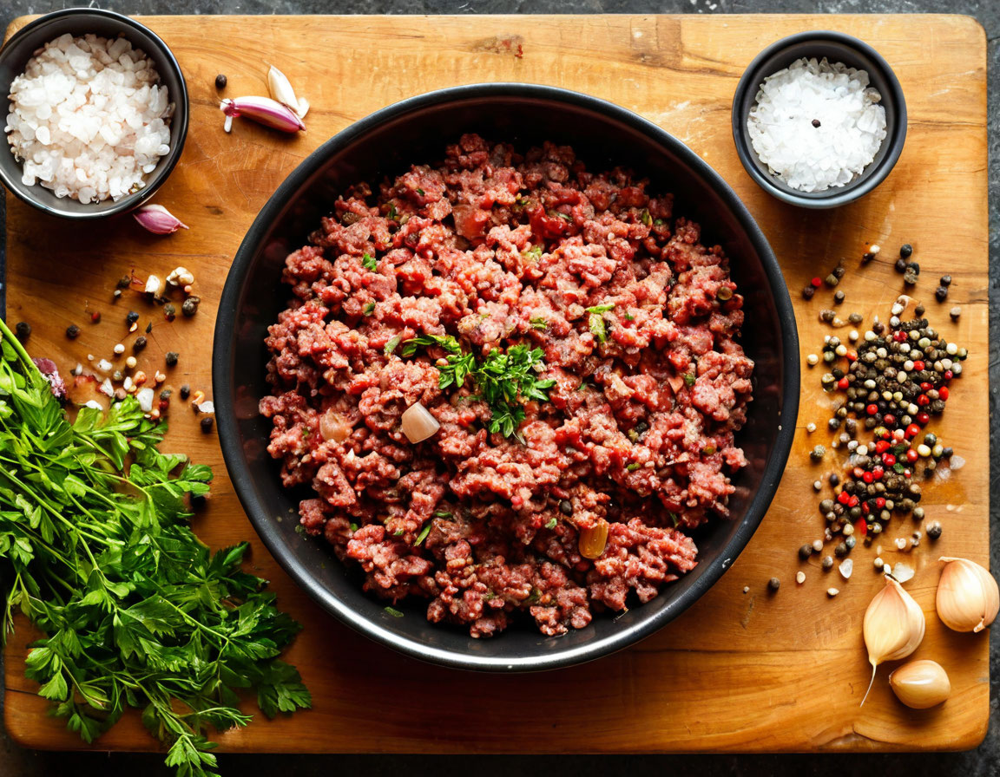
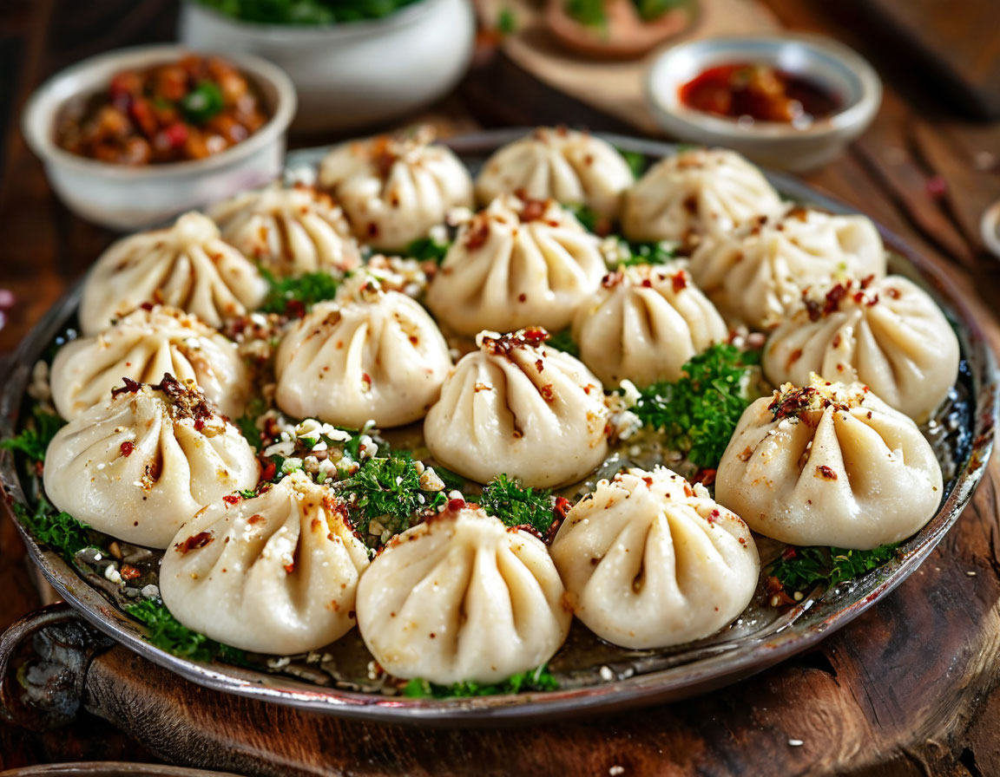

Рецепт вкуснейших хинкалей тут!
Продукты
Тесто
- Мука 500г
- Вода 250г
- Соль 10г
Начинка
- 600 г говядины
- 400 г жирной свинины
- Кинза
- Петрушка
- Лук
- Вода
- Соль
- Черный перец
- Красный перец

- Приготовление теста:
- Смешайте муку с солью.
- Постепенно добавляйте холодную воду, замешивая крутое тесто.
- Тщательно вымесите тесто, чтобы оно стало эластичным и жестковатым.
- Дайте тесту отдохнуть под пленкой.

- Формирование колбаски:
- Раскатайте тесто и сверните его в плотную колбаску.
- Дайте колбаске отдохнуть минимум 15 минут.
- Приготовление начинки:
- Мелко нарежьте лук и зелень.
- Порубите мясо.
- Смешайте фарш, лук и зелень, добавьте соль, черный и красный перец, немного воды и перемешайте.

- Формирование хинкалей:
- Нарежьте колбаску теста на небольшие кусочки.
- Раскатайте каждый кусочек в лепешку диаметром около 15 см.
- Положите начинку в центр лепешки и залепите края в виде мешочка.
- Варка:
- Варите хинкали в подсоленной воде в течение 6-8 минут.
